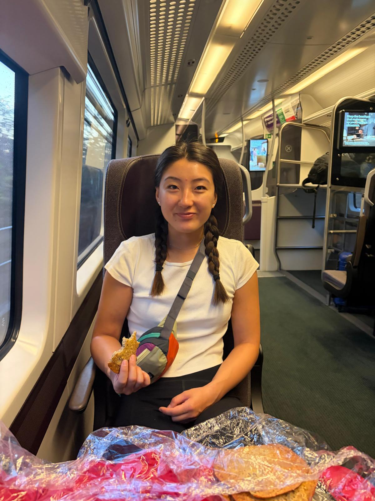
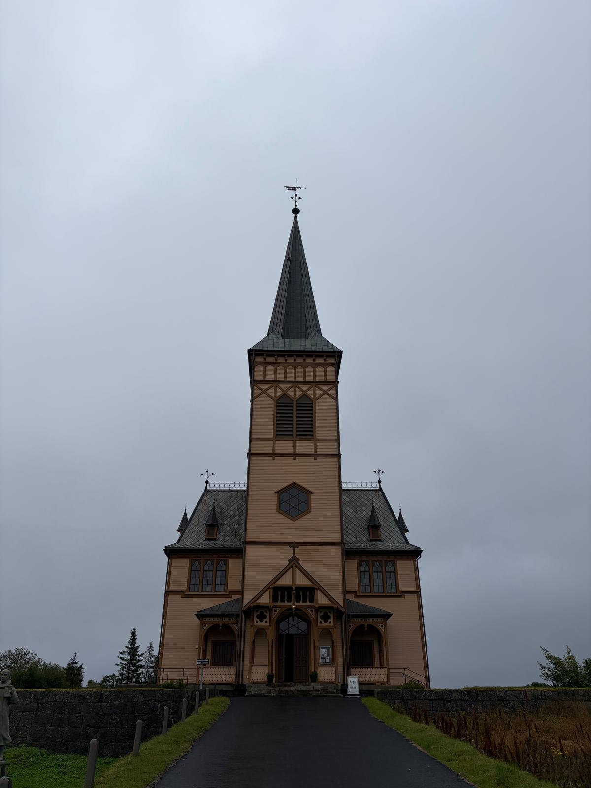
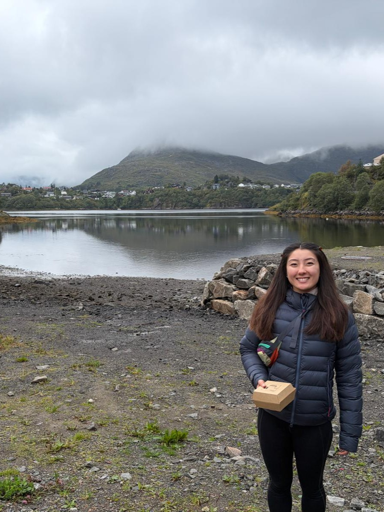
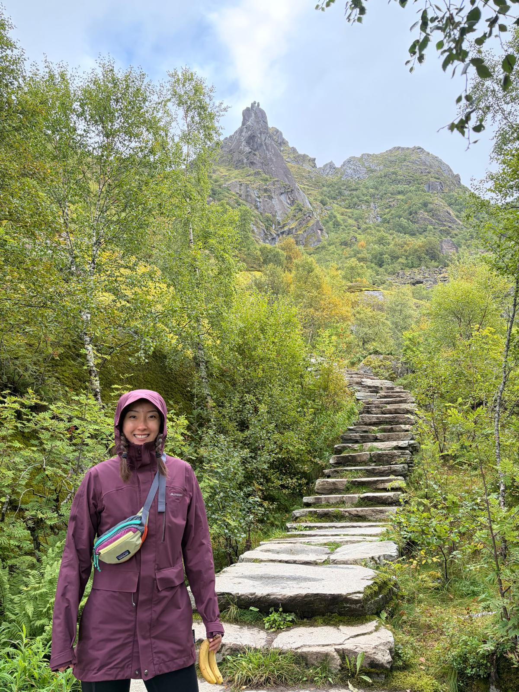
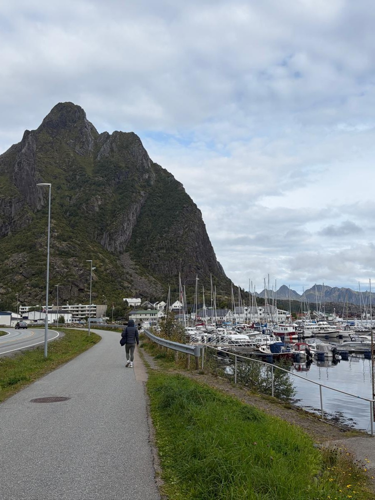
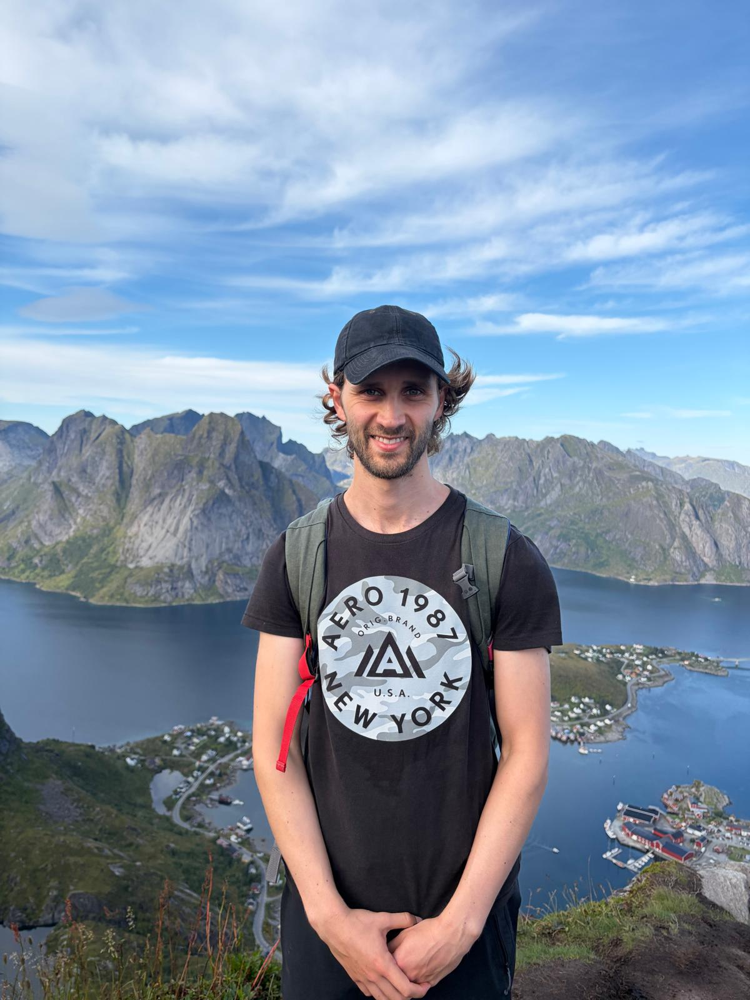
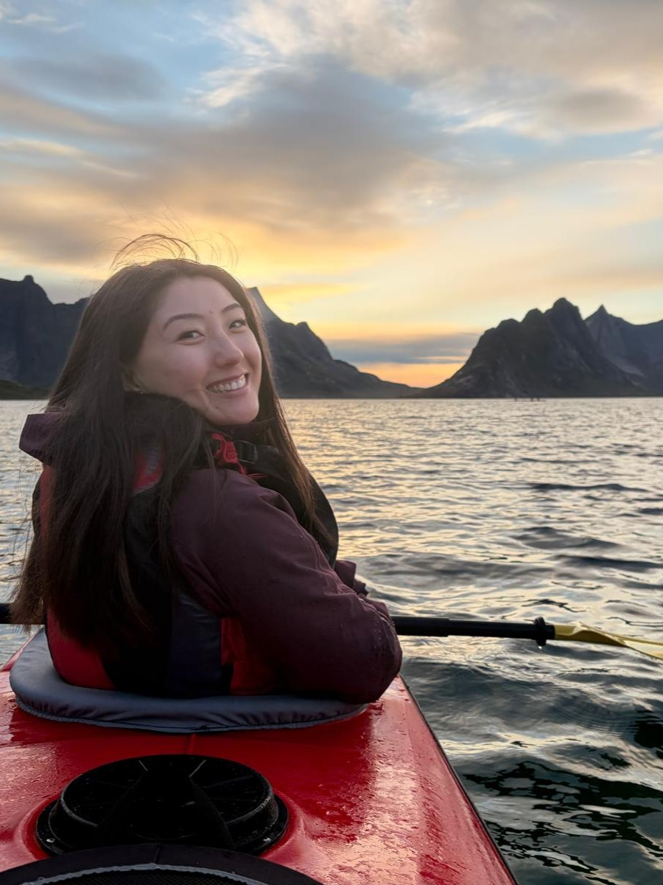
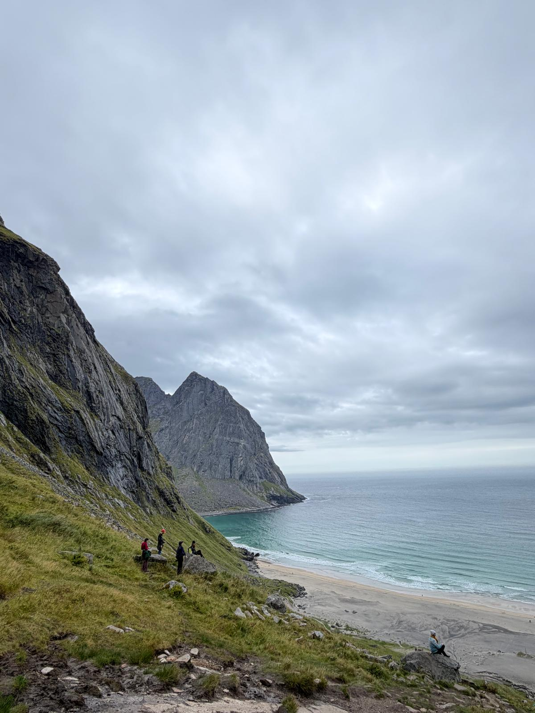
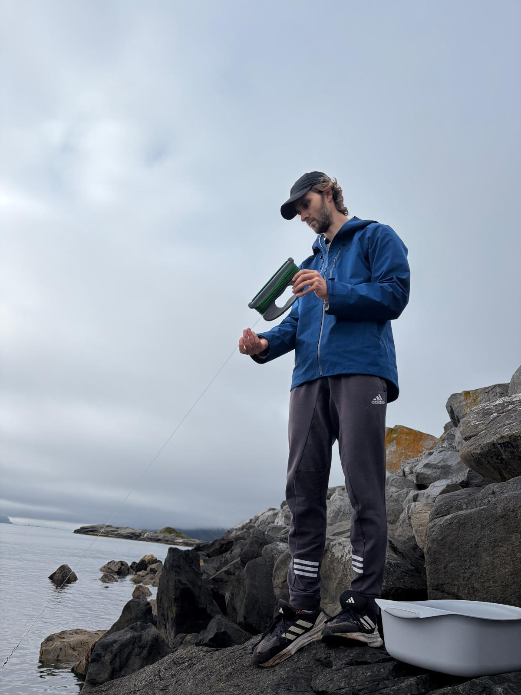
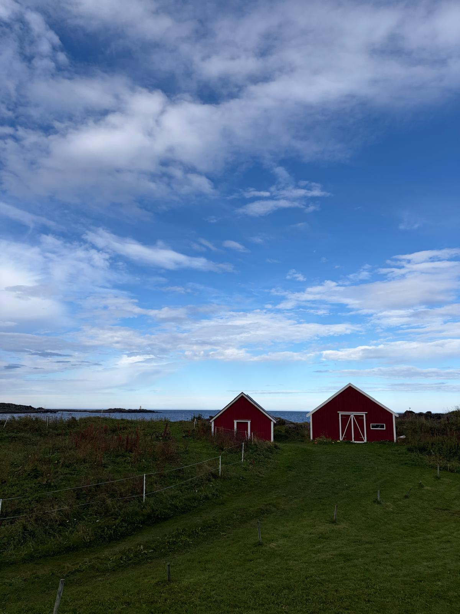

Our end of UK trip took us to Norway into the remote Lofoten Islands. It was a bit of a jounrey to get there through Oslo and Bodo but it was well worth it for the sights.

14th August 2026
Our slightly long plane journey led us to Bodo where we played some darts to kill the time before our boat journey to Svolvaer. We were slightly concerned about the seasickness but it turned out to be ok despite a few moments we spent holding on for dear life. We were surprised by how light it was at 11pm still! We were well and truly in the Northern Latitudes

15th August 2026
We took a bus into Kabelvag and wondered around the town. First we got a delicious cinnamon bun and found the old wooden church. We also discovered some abandoned bunkers which were apparently leftover from German occupation in WW2. We took a tour of the local museum learning about the fishing culture of the Lofoten Islands and also seeing the otters and seals!

16th August 2026
For dinner we decided to try a local delicacy, fish soup. As someone who isn't a big fan of fish it was actually really enjoyable and fresh.

17th August 2026
We decided to take a hike up to Devil's gate, a rock wedged between two columns. The scramble was a bit more treacherous then we expected, there were some smooth faces and there was a LOT of mud. We saw some people rock climbing off to the side and the view that we got from the top of the hike was spectacular. We could see the whole of Svolvaer and the opposite side which was quite uninhabited. We then treated ourselves to a sauna which was rejuvinating. We met someone from Oslo who frequently holidayed in Lofoten and we took a few tough but rewarding ice plunges in between sweating it out.

18th August 2026
This was our rest day, we shopped and cooked and watched videos in our Airbnb :)

19th August 2026
We picked up our EV to start driving around the islands! We gazed on at mountains as we cruised on by. We stopped off to grab some lunch nearby a golf course with a view of the ocean. In the afternoon we stopped off at Reine to do a 500m hike called Reinebringen. It was a popular route with almost 1000 steps but we made quick work and got some spectacular views at the top.

20th August 2026
In the morning we went to the edge of the islands in the town of A, famous for the cinnamon buns. We did another hike by some waterfalls and a lake and ended the day with a sunset (10pm for Norway) kayak back in Reine. The waters were calm and we were able to see jellyfish and even pick some of them up. The sky soon turned pink with golden clouds as we paddled. We also paddled past a super yacht and got close enough to see the security guards on deck.

21st August 2026
Surprise surprise we did another hike, this time to a beach where we dipped our toes in the freezing cold water. We stopped off at a nearby remote farmhouse making delicious pizzas and relaxed in our Airbnb which had some resident goats!

22nd August 2026
We thought we would try our hand at some fishing. We bought a hand line and scouted out several spots to catch some fishies. We first went to A but there was not enough of a drop off. We tried a few similar places before we settled in Moskenes. We practiced throwing the line of the edge, nearly throwing ourselves off in the process but we had no luck that day.

23rd August 2026
It was time to return to Svolvaer and get the ferry back to Bodo. We had time to stop off in Bodo for one more sauna experience. We had a beautiful view of the harbour and even access to jump in the ice cold waters between sets in the sauna. Sophie took it a bit too hard with the alternating cycles and nearly passed out! As we left Norway the next day we heard unique church bells ringing which reminded me of a game I used to play...